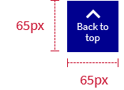

Back to top
This is a shortcut that allows users to quickly navigate to the top of the page for long-page designs both on mible and desktop.
- Use a Back to Top button for pages that are longer than 4 screens
- Place a persistent Back to Top button in the lower right side of the page
- Make the button stationary

Page content
Code